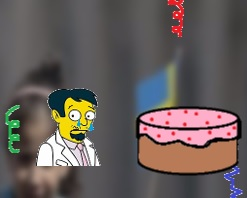

| Title | This week in the world |
| Date | 2017-08-30 22:41 |
| Category | Games |
| Language | Javascript |
| Platform | HTML5 |
| State | Finished |
| Started | 14 Nov 2015 |
| Web | Play |
My 7th entry for the One Hour Game Jam event.
The theme was "solidarity", but notably I made this game with the theme from the week before, "bitslap's birthday jam".
It is ostensibly based on events which happened in the world during the week before. These include an article I gave a presentation on, bitslap's birthday, the Charlie Ebdo attack, and one event in kdrnic's life, in order of growing importance...
The version available is slightly redacted compared to the original.
It is all very puerile, but it was fun and cathartic to make.